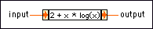

Expression Node
Owning Palette: Numeric VIs and Functions
Requires: Base Development System
Use the Expression Node to calculate expressions that contain a single variable. The following built-in functions are allowed in formulas: abs, acos, acosh, asin, asinh, atan, atanh, ceil, cos, cosh, cot, csc, exp, expm1, floor, getexp, getman, int, intrz, ln, lnp1, log, log2, max, min, mod, rand, rem, sec, sign, sin, sinc, sinh, sizeOfDim, sqrt, tan, tanh.

 Add to the block diagram Add to the block diagram |
 Find on the palette Find on the palette |